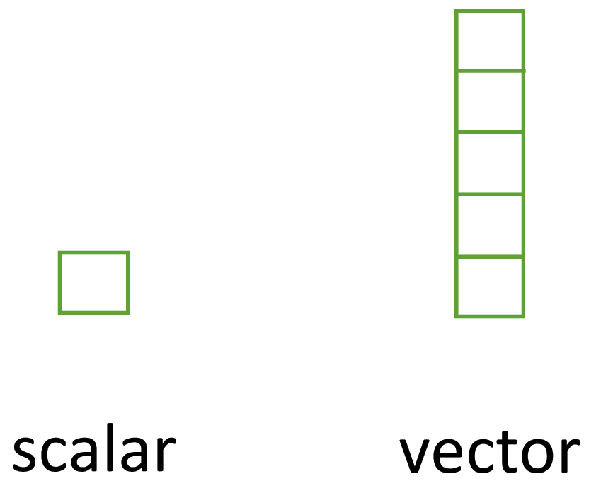
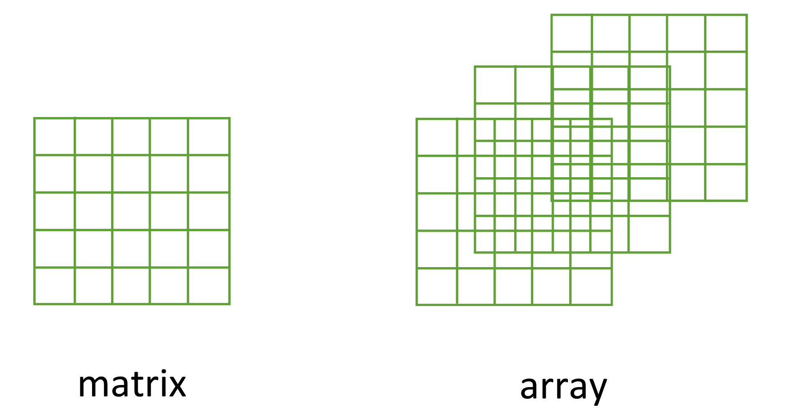
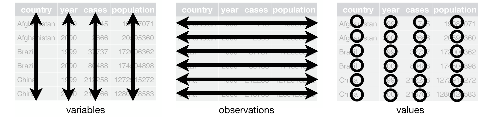

[1] "double"[1] "character"[1] "character"[1] "logical"[1] "logical"PUBHLT0411: Statistical Packages for Public Health Data Analysis
University of Pittsburgh, Biostatistics and Health Data Science
R has six basic types of data: double/numeric, integer, logical, character, complex and raw. We will focus on:
TRUE or FALSE.
NA to represent missing data.typeof()[1] "double"[1] "character"[1] "character"[1] "logical"[1] "logical"TRUE or FALSE.NA[1] "logical"[1] FALSE FALSE TRUEis.na() is a vectorized function, meaning it checks each element of the vector (automatically) and returns a logical for each index.c()[1] 1 5 9 0[1] "double"[1] "1" "abc" "dog" "TRUE"[1] "character"[1] "double"[1] NA NA NA NA NA NAtypeof versus class[1] "integer"[1] Th W M F F T F W
Levels: M T W Th F[1] 4 3 1 5 5 2 5 3NA[1] Th W M F F T F W <NA>
Levels: M T W Th F| Type | Logical test | Coercing |
|---|---|---|
| Character | is.character | as.character |
| Numeric | is.numeric | as.numeric |
| Logical | is.logical | as.logical |
| Factor | is.factor | as.factor |
| Complex | is.complex | as.complex |
typeof(), length(), and attributes()
[1] 1[1] 5
[,1] [,2] [,3]
[1,] 1 2 3
[2,] 4 5 6
[3,] 7 8 9
[4,] 10 11 12length(): dim(), nrow(), ncol().names(): rownams() and colnames(). [,1] [,2]
[1,] 1 2
[2,] 3 4| Vector | Matrix | Array |
|---|---|---|
| names() | rownames(), colnames() | dimnames() |
| length() | nrow(), ncol() | dim() |
| c() | rbind(), cbind() | abind::abind() |
| — | t() | aperm() |
| is.null(dim(x)) | is.matrix() | is.array() |
names().NA.
name age city
1 John 62 PGH
2 Jane 45 SEA
3 William 39 NYC
4 Elizabeth 27 CHIas.data.frame() coerces an object to a data frame.
twos
1 2
2 4
3 6
4 8[1] TRUE c1 c2 c3
r1 1 2 3
r2 4 5 6
r3 7 8 9
r4 10 11 12[1] TRUE[[]], [], and $.
[[]] and $ select single elements.
$ is a shortcut for [[.[] selects any number of elements.[+]: Keeps elements at specified positions, keeps attributes.[-]: Drops elements at specified positions, keeps attributes.[[+]] selects a single element, drops attributes.$ doesn’t work for vectors.[+/-] always returns a list with attributes.[[+]] and $ returns the object (type) in the called element.[,+/-] select or drops one or more columns.[+/-,] select or drops one or more rows.[[]] and $ select a single column.[].
> (greater than), >= (greater than or equal to), < (less than), <= (less than or equal to), == (equal to), and != (not equal to).& indicate “and” statements (check for both conditions). Conditions with | indicate “or” statements (check for either condition). name age city
1 John 62 PGH
3 William 39 NYC name age city
1 John 62 PGH
2 Jane 45 SEA name age city
1 John 62 PGH name age city
1 John 62 PGH
2 Jane 45 SEA$name
[1] "John Smith" "Jane Doe"